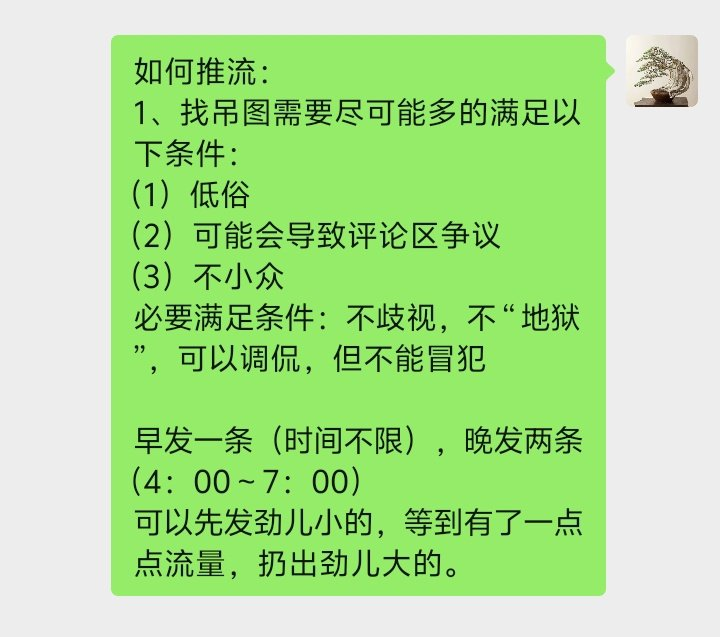
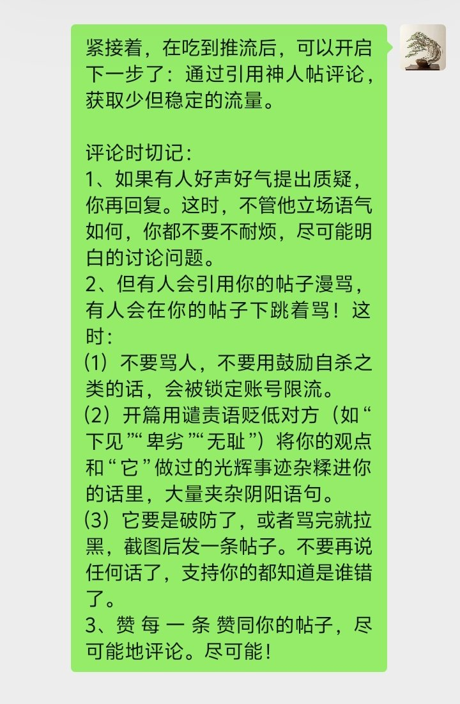
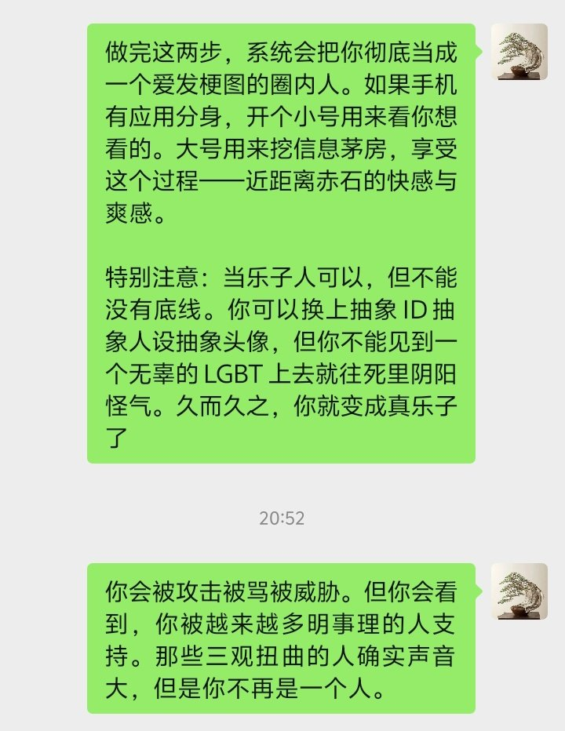
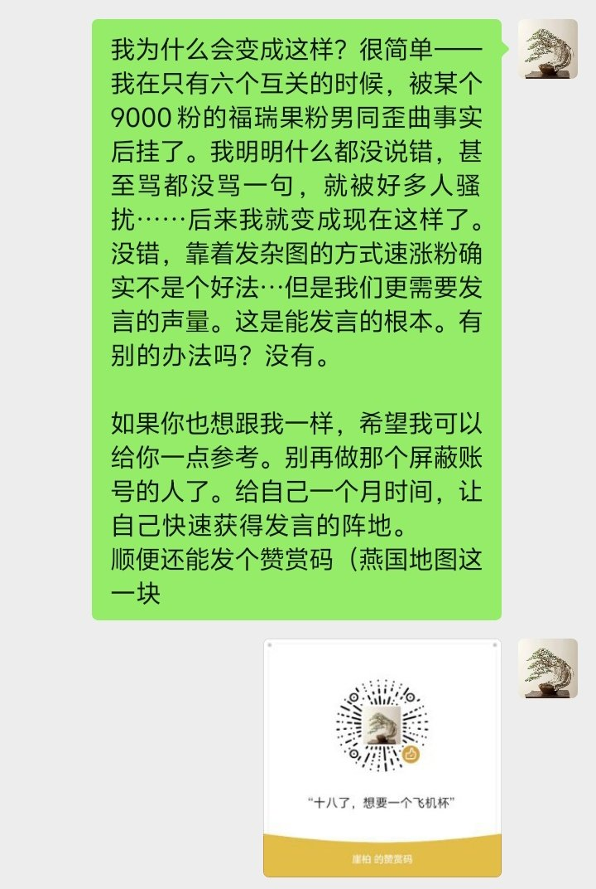

Winit420 #天苑四
@winterfruit_1
@notThujaS 什么时候4️⃣




传奇出生鸟鲁鲁（浮木克星）
@notThujaS
因为迟早我都会被冻结的，所以置顶焚决，把我的经验传给每一个人：
（以下是核心原则）
1、粉丝就是推流，就是声量。就算你再讲道理再正确，没有声量支撑也是错的，也会被错误淹没
2、立场/行为不能滑向 任 何 一种极端！这是底线！滑向任何一种极端不仅会影响流量，还会从根本扭曲你的底层价值观！！ https://t.co/4CvKhObgxO